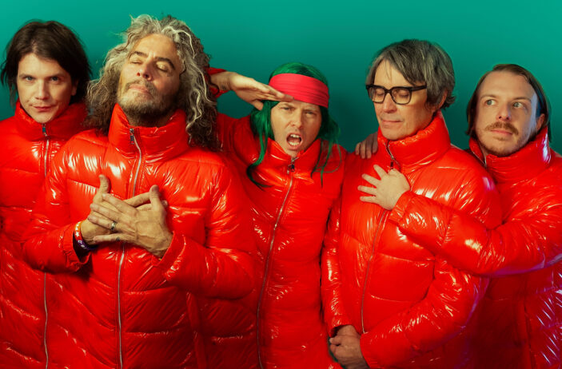
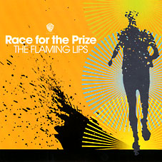
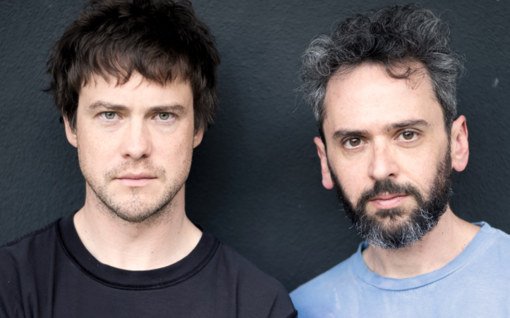
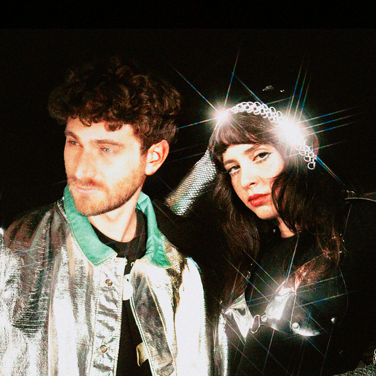

6. Why Won't They Talk To Me
Ez már egy sokkal inkább árulkodó cím, és maga a refrén is egyben. A kérdés, „Miért nem beszélnek hozzám?”, remekül megragadja az album melankolikus magányát, és bemutatja, hogy Kevin mennyivel sebezhetőbbé, érzelmileg nyitottá tette magát ezen a lemezen az Innerspeaker-hez képest.
A dal énje vágyik a kapcsolatokra, de nem képes megérteni, hogy mások miért nem akarnak vele foglalkozni, miért nem állnak vele szóba. Bebetonozódik benne a gondolat, hogy nem önszántából magányos (ellentétben az Innerspeaker énjével).
Maga ez a szám tematikailag a tökéletes kontra a „Solitude Is Bliss”-re az előző albumjáról.
Ez a dal is egy szintetizátor-kollázzsal kezdődik, a buborékos szinti itt is megjelenik. 2020-ban megjelent videóklipben látható, hogy a dal elején megjelenő Casio szintetizátor nem más, mint amit apjától örökölt. Ezzel is egyfajta nosztalgiát idéz elő, még ha csak Kevinben is. Az apja fontos szerepet játszott zenei karrierjében és az album utolsó száma is róla íródott. Emellett sok más számában is megemlítette őt.

Részlet a videóklipből
Az első versszak nem habozik, rögtön a lényegre tér. A dal személye arról énekel, hogy kint van a „zónából” - elbambult, kikapcsolt az agya, elmélyült gondolataiban, önreflektál. A következő sorok nem köntörfalazzák az érzelmeit- „Olyannyira egyedül vagyok/ Semmi sincs számomra”, tehát megalapozza az önsajnálatot mint témát.
Ezután úgy dönt hazamegy (átvitten nem próbál kapcsolatokat szerezni, mert mások úgy sem törődnek vele), megpróbál észnél/józan maradni, nem engedi a gondolatoknak, hogy felülkerekedjenek rajta. Próbálkozik úgy tenni, úgy színlelni, mint ha semmi sem történt volna. Tehát valószínűleg kínos helyzetbe hozta magát, vagy mások miatt érezte rosszul magát. A „pretend”, azaz színlelni, itt arra utalhat, hogy igazából ő is tudja, hogy hiába keménykedik, küszköd, hogy neki nem kellenek mások, megvan egyedül, legbelül mégis vágyakozik az emberi kapcsolatokért.
Ezt az követi, hogy egy magányos, öreg fához hasonlítja magát- mindketten egyedül vannak, nem tudnak elmozdulni és mindenki figyelmen kívül hagyja őket. Ezután kicsit játszik a humorral a szám énje, azt mondja, hogy „Whoops-a-daisy”, tehát „Hoppácska!”, ami egy igen gyerekes kifejezés. Arról énekel, hogy egy pillanatra úgy gondolta boldog, de hirtelen rájött, hogy ez mégsem így van- ez persze az előző sorokra utal vissza- kissé mintha naplót vezetne.
Egy zenei szünet után újból megismétlődik a versszak, de két és fél sor megváltozik. Elsőként az, hogy azt mondja: a zónán kívül (gondolataiban elmélyedve) most már belátja, hogy nem kell nekik ő, de neki sem kellenek ők. Keserűen, de elfogadja a tényt, hogy magára maradt. Ennek ellenére folytatja korábbi gondolatmenetét, megismétli az előző versszakot. Viszont nem sokkal ezután elhagyja a fa metaforát, inkább csak azt mondja, hogy ő magányosnak lett a sors által rendeltetve: „A végzetem magányos, öreg énnek lenni”. Ez a versszak is ugyan azzal a humoros sorral végződik, mint az előző.
Rögtön át is vált a kórusba a szám, ami elég egyszerű, de rengeteg érzelmet rejt magában. Csak annyiból áll, hogy: „Miért nem beszélnek hozzám?”, majd a sorok végén halkan: „Azt hittem boldog vagyok…”. Egyszerűségének ellenére a kórus megmutatja a narrátor frusztráltságát. Ismételgeti ugyanazt a sort, nem is másoktól, hanem magától kérdezi, hogy miért nem állnak vele szóba, átvitettebben miért is nem szeretik őt az emberek. A háttérben, halkan, szinte szenvedő hangon megjelenő gondolat, hogy úgy hitte boldog, azt mutatja, hogy eddig gőgösen azt gondolta, ő jól van egyedül, de realizálódott benne a fájdalmas valóság. Ez a repetició beleszögeli a hallgató fejébe, hogy a dal énje képtelen elmenekülni magányosságából, de ugyanakkor képtelen racionalizálni azt, hiába győzködi magát.
A dob szintén repetitív, és mint a „Be Above It”-ban, segít átadni az üzenetet. A háttérben Kevin szenvedő éneklése (ami csak az „a” magánhangzó vokalizálása) néha szinte jajgatás azt mutatja, hogy már-már a sírás szélén áll a dal személye.
Ezt követően egy híd következik, ahol kicsit más fordulatot vesz a szám. Először is azt mondja, hogy őt igazán nem is érdekli az egész dolog. Dacosan azt mondja, hogy nem is figyel oda egy szóra sem, amit mások mondanak. Elhitette magával, hogy őt hidegen hagyja mindenki más, de fájdalmasan egyértelmű, hogy pont az ellentétje érvényesül. Úgy folytatja, hogy mindenki csak magáról beszél egész nap, ezzel felfedve mit is érez igazán- sértődött másokra, hogy vele nem foglalkoznak.
Ez a rész végig viszonylag tisztább, kevesebb hangszerrel. Az éneklés kicsit inkább lemondó, elégikus hangulatú. Legmélyen realizálódik benne, hogy képtelen szembeszállni a magányából eredő fájdalommal. Inkább deflektálja érzéseit, másokat hibáztat, ostoroz miatta. Ez a fájdalmas, szinte hamis düh utolsó mentsvárnak érződik, mivel kifogyott az opciókból és nincs hova mennie, nem tud mit kezdeni magányával- nincs megoldás. Ő is tudja legbelül, hogy ez már nem segít, csak próbálja visszanyerni az irányítást élete felett. Érzelemileg és társadalmilag is már teljesen izolált lett, számára már nincs kiút.
Majd visszajön az ismétlődő kórus, a lemondás ekkora már teljesen egyértelmű. A szám végéig élvezhetjük Kevin mesterien érzelmes zenei összeállítását, enged elmélyülni saját gondolatainkban. A szám egy növekvő rátájú LFO-s szintetizátorral végződik.
A fő szintetizátoron a számban phaser, delay és kórus effekt van. Emelett megjelenik egy lead- illetve egy arpeggiált szintetizátor is. Az egész szám mindössze kettő, egymás melletti gitár akkordból áll (G dúr és F# moll), amiket egy akusztikus gitár játszik. Az F# a G dúr skála 7. hangja, és Kevin tipikusan szereti használni az 1. hang után egy oktávval lejjebb a 7. hangot. A szintetizátor többnyire a D dúrt (5. hang, domináns akkord) és A mollt (2. hang, viszont az A dúr is megjelenik, ami az F# moll relatív dúrja) játssza.
A dobolás a Flaming Lips „Race For The Prize”-ból inspirálódott, főleg a kompresszió és szaturáció részlegen. Késöbb Parker említette is ezt a számot egy interjúban, mint nagy inspiráció. Kevinnek segített az albumon a mixingben David Fridmann, aki rengeteg The Flaming Lips albumot mixelt, illetve az MGMT, Black Moth Super Rainbow és Magdalena Bay albumain is dolgozott.
Sajnos a basszus ezen a számon nem túl kreatív, elég monoton, de elvégzi feladatát.